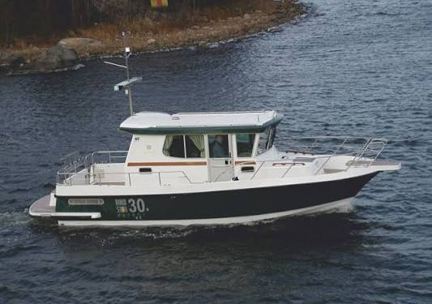

B-Scout Boat Guide · NDST-31P
Nord Star 31+ All-Weather Pilothouse
From 2018
The Nord Star 31+ is a Finnish all-weather walkaround pilothouse cruiser designed around protected helm operation, three-door deck access and a deep-V planing hull. Factory specifications support high-speed coastal use with substantial twin-diesel power.

- Length
- 33.17 ft
- Beam
- 10.33 ft
- Draft
- 3.28 ft
- Hull behaviour
- Planing
- Fuel
- Diesel
- Propulsion
- Sterndrive
- Engine configuration
- Twin diesel sterndrives typical; maximum rated engine power 550 kW
- Boat family
- Pilothouse Cruiser
- Construction
- Fiberglass
Best for
- Owners cruising in cold, wet or exposed coastal conditions
- Couples who prioritize deck access and helm protection
- Buyers who value speed as well as all-weather capability
Trade-offs
- Twin sterndrives add maintenance and corrosion exposure
- High-speed capability carries substantially higher fuel burn than displacement cruisers
- Interior volume is constrained by full walkaround side decks
Known concerns
- No model-specific concern has been promoted to B-Scout’s evidence threshold. This does not mean the model has no age-, condition- or hull-specific risks.
Inspection focus
- Inspect both sterndrives, bellows, transoms and corrosion protection
- Inspect engine cooling, exhaust and fuel systems
- Inspect pilothouse doors, windows and roof penetrations for water entry
- Inspect deck and rail attachments
- Verify actual engine package and maximum-rated power compliance
Continue researching
Related boat models
Mainship 30 Pilot
33.08 ft · Semi-Displacement
Ranger Tugs R-29 CB Command Bridge
33 ft · Planing
Ranger Tugs R-29 S Sedan
33 ft · Planing
Bayliner 3258 Command Bridge Command Bridge Cruiser
32.92 ft · Planing
Bayliner 3388 Motor Yacht Flybridge Motor Yacht
32.92 ft · Semi-Displacement
CHB 34 Double Cabin Double Cabin
33.5 ft · Semi-Displacement
About this record
B-Scout preserves uncertainty: missing information remains unknown rather than being treated as a negative. Specifications and guidance describe the model record; individual boats can differ by year, equipment, refit and condition.